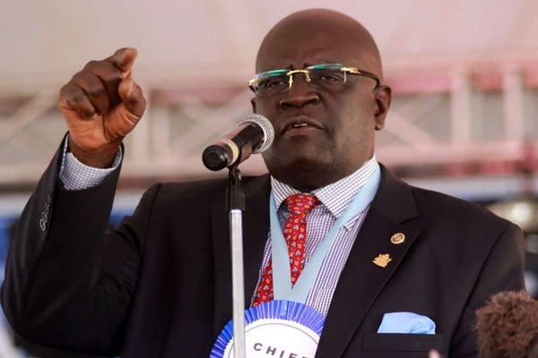

Proffesor George Magoha
The man who changed the education sector in kenya.

Proffesor George Albert Omore Magoha was a Kenyan consultant surgeon, academic administrator and technocrat
Here's a time line of Proffesor Magoha:
- 1952 Magoha was born in Kisumu on 2 July 1952. He moved in with his older brother, John Obare and his wife Agatha Christine Obare, in Nairobi, on account of his [Magoha] asthma, at a young age.
- 1960 He joined Jina Primary School for his primary education.
- 1964 Magoha later attended Dr David Livingstone Primary School, in Nairobi.
- 1967 He then attended Starehe Boys' Centre and School, where he completed his O-Level studies. He proceeded to Strathmore School, for his A-Level education, graduating with a High School Diploma in 1972.
- 1970 Magoha was awarded a scholarship to study human medicine at the University of Lagos, in Nigeria. His studies took him through the Lagos University Teaching Hospital, the University College Hospital, Ibadan, both in Nigeria and the Royal College of Surgeons in Ireland, Royal Postgraduate Medical School, Hammersmith Hospital in London, United Kingdom. He was trained as a urologist and was a Fellow of the Royal College of Surgeons in Ireland.
- 1999 He joined the University of Nairobi as a lecturer in Urological Surgery in 1988 and rose through the ranks to become a full Professor of Surgery in 2000. He served in various administrative positions at the university, rising from chairperson of the Academic Department of Surgery in 1999, Dean of the School of Medicine, Principal of the College of Health Sciences, Deputy Vice-Chancellor in charge of Administration and Finance to Vice-Chancellor in January 2005 after a competitive recruitment process.
- 2016 In 2016, with his record as a no-nonsense education administrator, he was appointed the Chairman of the Kenya National Examination Council, by President Uhuru Kenyatta. His immediate task as the Chairman of KNEC was to reform the council to arrest the widespread academic dishonesty and corruption in the administration of national examinations. He is credited to have dismantled cartels that had propagated exam cheating for years and restored credibility of exams in Kenya.
- 2017 Magoha was the author of a book, Tower of Transformational Leadership, published by Kenway Publications in 2017. It is an autobiographical account of his experience as a leader in various roles in medicine, surgery, academia and the community. As of May 2017, he was the chairman of the Kenya Medical Practitioners and Dentists Board. Magoha is also celebrated for playing a key role in transforming the education sector both as a lecturer at the University of Nairobi and during his tenure at the Minister of Education.
- 2019 On 1 March 2019, he was nominated as the Cabinet Secretary for Education in the Kenyan Cabinet, and was sworn in on 26 March 2019, replacing Amina Mohamed, who was transferred to the Sports docket.
- 2023 Magoha died following a suspected cardiac arrest at the Nairobi Hospital, on 24 January 2023, aged 70. He had collapsed at home before being rushed to the hospital where he later succumbed after efforts to resuscitate him were futile. Magoha was known as a tough-talking and no-nonsense during his tenure at the Ministry of Education, where he served at the helm as a Cabinet Secretary.
“If you think that you need an A to make it in your life then that is the second stupidity that you have to get out of your system.”
--Prof.George Magoha--